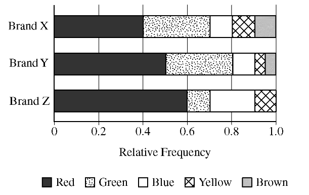

Three brands of candy pieces—X, Y, and Z—are made in many colors. Shaela bought one bag of each brand and counted the number of pieces of each color. The graph below shows the relative frequency distribution of colors for each bag.

Which of the following statements must be true?